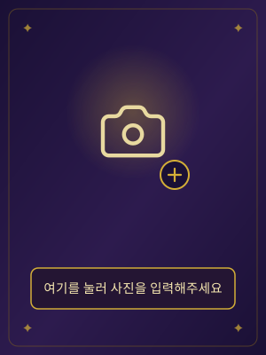

불러오는 중입니다...
내 얼굴은 어떤 한국 부자와 가장 닮았을까?
사진 한 장으로 얼굴의 6개 비율을 비교해 가장 가까운 부자 3명과 내 두드러진 특징을 보여줍니다.
포브스 2026 한국 부자 47인 표본 · 기기 내 분석 · 가입 없음

사진은 서버로 전송되지 않습니다. 정면을 향한 밝은 사진을 권장합니다.
얼굴 랜드마크에서 이마 높이, 눈 사이 거리, 코 길이, 입 너비, 턱 길이, 얼굴 종횡비를 계산해 47명 표본과 비교합니다.
결과는 오락용 얼굴 비율 비교이며 부, 성격, 성공 가능성을 예측하지 않습니다.
사진은 서버 전송 없이 기기에서만 분석됩니다.